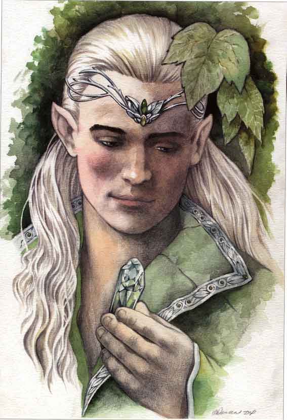
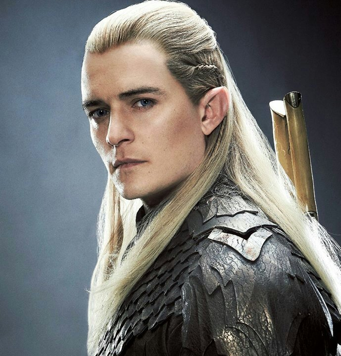
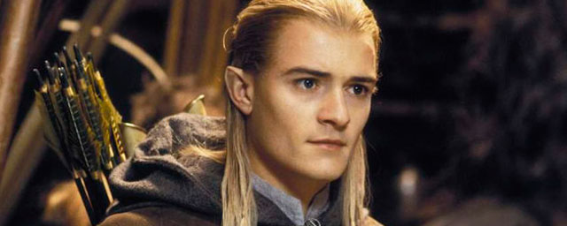

Legolas Greenleaf
príncipe, mensageiro e mestre-arqueiroLegolas, também conhecido como Legolas Verdefolha, foi um Elfo Sindarin que fazia parte da Sociedade do Anel na Terceira Era. Ele foi o filho do Rei Élfico Thranduil da Floresta das Trevas, que servia como Príncipe, mensageiro e mestre-arqueiro.
Com sua visão aguçada, audição sensível, e mira excelente, Legolas era um recurso valioso para os outros oito da Sociedade do Anel, da qual fez parte em sua jornada pela Terra-Média. Legolas se tornou grande amigo do anão Gimli, apesar da grande inimizade entre as duas raças.
Durante sua jornada, Legolas sempre ficou na retaguarda devido a sua visão privilegiada. Em Caradhras, Legolas foi capaz de andar acima da neve, enquanto seus companheiros lutavam. Quando Gandalf deu seu conselho, Legolas também votou contra ir em Moria, pois ouviu vozes de wargs.
Legolas e Gimli se tornaram amigos, porém, quando Gimli cumprimentou a rainha élfica Galadriel com suavidade. Com o resto da Sociedade, deixou Lothlórien depois de receber vários presentes. A Legolas foi dado um arco Garadhrim, junto com outros presentes que Galadriel e Celeborn deram a ele e ao resto da Sociedade, como capas e lembas.
"Mas descansa se precisas de descansar. No entanto, não percas toda a esperança. O amanhã é desconhecido. O conselho vem muitas vezes com o nascer do Sol."
Legolas Greenleaf
- Nascimento: Desconhecido
- Morte: 120 (4º Era)
- Raça: Elfo (Sindarin)
- Interpretado por: Orlando Bloom
Legolas e Aragorn cantaram uma canção fúnebre pela queda de Boromir. Ele também liderou o restante da Sociedade através de Rohan quando Merry e Pippin foram tomados pelos Uruk-hai. Também em Rohan, ele adquiriu um cavalo cinza chamado Arod, em que ele e Gimli cavalgariam juntos muitas vezes. Na Batalha do Forte da Trombeta, Legolas e Gimli envolveram-se em um "concurso" de matar Orcs, Gimli ganhou o concurso por um ponto.
Quando Aragorn decidiu passar pelas Sendas dos Mortos, Legolas e Gimli voluntariamente se ofereceram para acompanhá-lo, juntamente com a Companhia Cinza. Após a Batalha dos Campos de Pelennor, Legolas ouviu as gaivotas gritando no mar pela primeira vez, cumprindo a profecia de Galadriel. Ele também lutou em Morannon e testemunhou a queda de Sauron.
